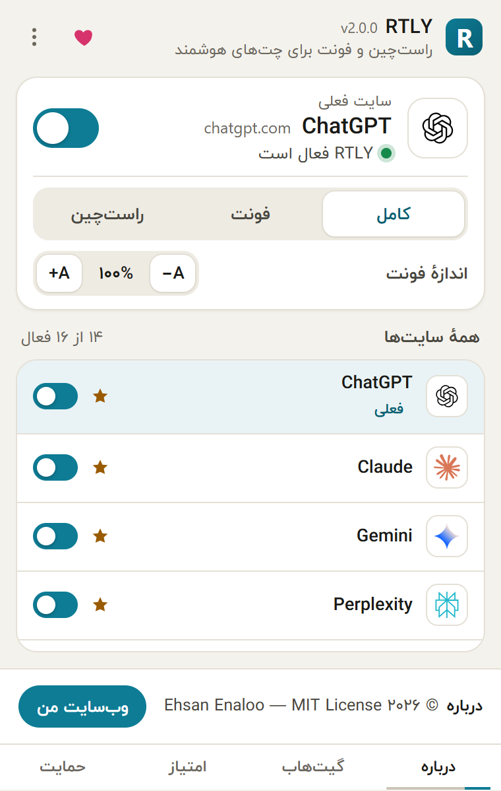
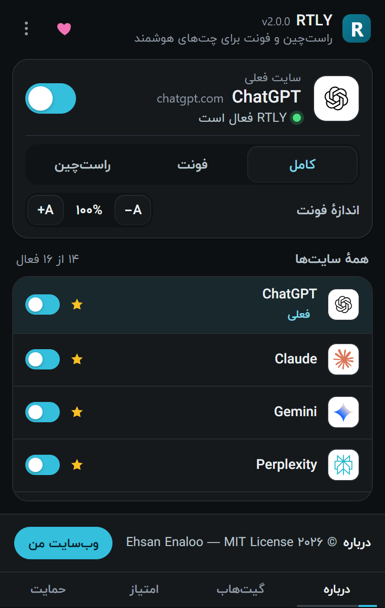

پیشنیاز: Chrome نسخهٔ ۱۱۱ به بالا (یا Edge با همان بسته). اگر سایت حساب بخواهد، باید در دستکم یکی از سایتهای پشتیبانیشده حساب داشته باشید. لازم نیست تنظیمی را عوض کنید.
۱. نصب و سنجاق کردن#
RTLY را از Chrome Web Store اضافه کنید (روشهای دیگر در نصب آمده است). سپس روی نماد قطعهٔ پازل در نوار ابزار کلیک کنید و RTLY را سنجاق کنید تا نمادش همیشه دیده شود.
۲. یک سایت پشتیبانیشده را باز کنید#
به سایتی مثل claude.ai، chatgpt.com یا gemini.google.com بروید. RTLY برای همهٔ سایتهای پشتیبانیشده بهطور پیشفرض روشن است. اگر تب پیش از نصب باز بوده، یک بار آن را دوباره بارگذاری کنید.
۳. پنجرهٔ افزونه را ببینید#
روی نماد RTLY در نوار ابزار کلیک کنید.


باید ببینید: نام و نشانی سایت زیر «سایت فعلی»، عبارت «RTLY فعال است»، یک کلید روشن، سه دکمهٔ حالت (کامل، فونت، راستچین)، کنترل اندازهٔ فونت با عدد ۱۰۰٪ و فهرست ۱۶ سایت پشتیبانیشده.
در هر صفحهٔ دیگر، پنجره میگوید RTLY از آن سایت پشتیبانی نمیکند. این طبیعی است.
۴. فارسی بخوانید و بنویسید#
یک پیام فارسی بفرستید یا گفتوگویی را باز کنید که پاسخ فارسی دارد. هر بند جداگانه بررسی میشود.
باید ببینید: بندهای فارسی راستچین و با فونت ایرانیکان. بندهای انگلیسی چپچین و با فونت خود سایت. بلوکهای کد چپبهراست میمانند. وقتی در کادر پیام مینویسید، هر سطر از زبانی که با آن شروع کردهاید پیروی میکند.
۵. حالت و اندازهٔ فونت را انتخاب کنید#
- در پنجرهٔ افزونه روی فونت کلیک کنید: جهت دیگر تغییر نمیکند ولی فونت فارسی میماند. روی راستچین کلیک کنید: فقط جهت، بدون فونت. با کامل هر دو برمیگردند.
- با A+ و A− اندازهٔ متن را هر بار ۵٪ و بین ۸۵٪ تا ۱۲۰٪ تغییر بدهید.
هر دو تغییر همان لحظه روی تبهای باز اعمال میشود و نیازی به بارگذاری دوباره نیست.
۶. یک سایت را خاموش کنید#
کلید پنجرهٔ افزونه را خاموش کنید. RTLY تبهای باز آن سایت را دوباره بارگذاری میکند و بعد آن را به حال خودش میگذارد. برای برگرداندن، کلید را روشن کنید.
بعد چه کنیم#
- میانبر Alt+Shift+R RTLY را برای سایتی که در آن هستید روشن یا خاموش میکند.
- از منوی سهنقطهٔ پنجرهٔ افزونه، باز کردن تنظیمات را بزنید تا پیشنمایش زنده، زبان رابط و جدول سایتها را ببینید.
- اگر سایتی خراب نمایش داده میشود، گزارش دهید.
راهنمای کاملتر (به انگلیسی): Troubleshooting and FAQ.